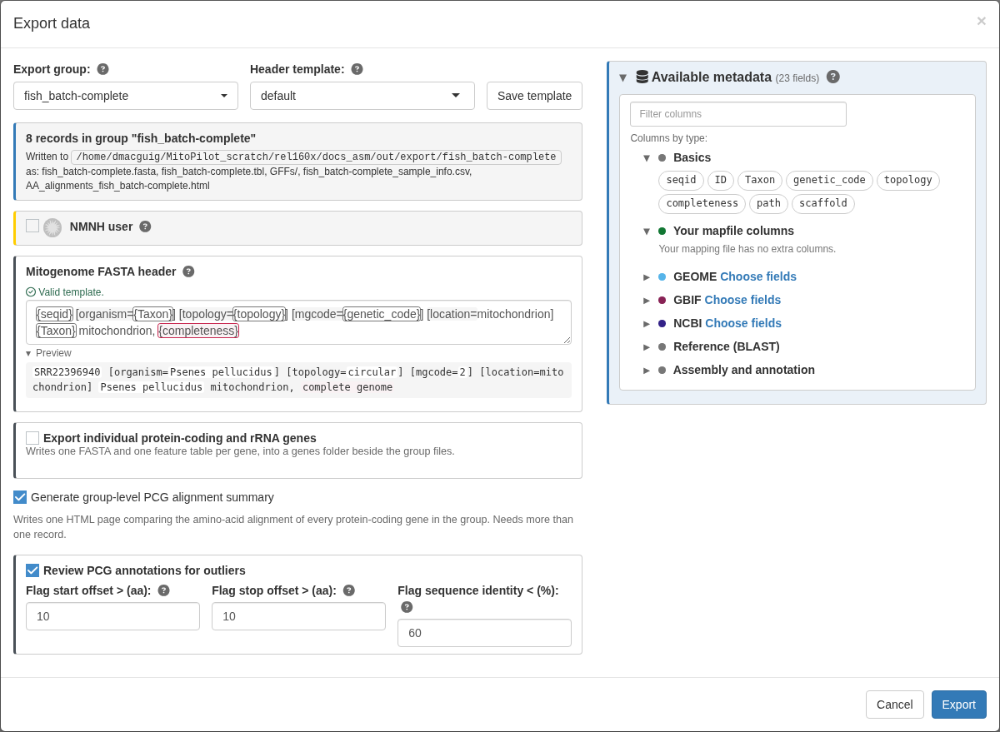
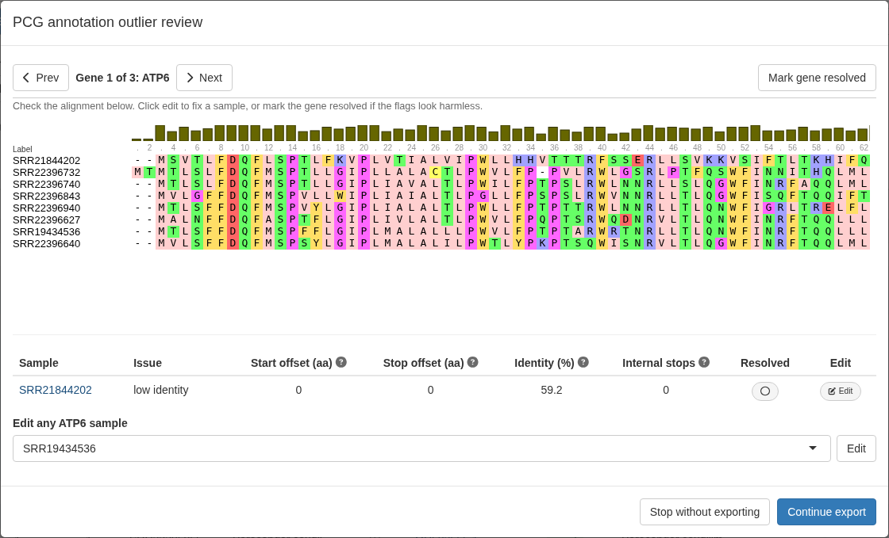

Test Project: Export
Test project: 0. Initialize 1. Assemble 2. Annotate 3. Export
The Export module turns finished annotations into the files GenBank needs for submission: a FASTA of the sequences and a five-column feature table of the annotations. MitoPilot allows you to export entire mitogenomes, individual genes, or both. Export also generates GFF3 annotation files and alignment summaries.

Make a group
Export works on groups, which correspond to submission batches. Select the assemblies you want and click Assign Group.

The Assign export group window summarizes what you selected: how many assemblies, which topologies, and the gene order of each. Type a name (letters, numbers, dots, hyphens, and underscores only) and click Create.
For the test project, select everything. MitoPilot then stops you:

A GenBank submission may contain complete mitogenomes or partial mitogenomes, but not both. This selection has some of each. Split into two groups produces fish_batch-complete and fish_batch-partial. Note that completeness is derived from each assembly’s topology, with circular meaning complete and linear meaning partial, unless you overrode it using the per-sample Partial flag or the linear_complete project setting.

An assembly can only belong to one export group at a time. Clear Group removes the selected assemblies from their group. Re-assigning a grouped assembly shows a warning in the window, because files already written for the old group are not cleaned up.
Export
Click Export Data.

Mitogenome FASTA header is the FASTA definition line, and Header template is a saved, named set of header patterns you can pick from. Any extra columns you put in the mapping file at project setup are available here and can be referenced using {column_name}. This is how you can include things like voucher numbers and BioSample accessions in the GenBank submission files.
There are two special parameters. First, {completeness} expands to “complete genome” or “partial genome” and belongs at the end of the header for GenBank to parse it correctly. Second, {seqid} takes the value in the ID column of the mapping file and appends the scaffold/path number if that sample is exporting multiple sequences.
Templates are validated as you type, and the Preview under each header box shows the header for the first record of the group. Click a column in the Available metadata panel on the right to insert it into the header box you last clicked. Save a template by name with Save template for reuse.
Tip. Samples linked to GEOME, GBIF, or NCBI records can also use {geome_...}, {gbif_...}, and {ncbi_...} columns in the header, such as {geome_lat_lon}, {gbif_collection_date}, and {ncbi_geo_loc_name}. See Using metadata fields at export.
Other options in the Export Data window:
- Generate group-level PCG alignment summary aligns every protein-coding gene across the group and writes an HTML report. Worth the wait as a final check.
- Export individual protein-coding and rRNA genes writes per-gene FASTA files and feature tables, with their own header template. Useful for phylogenetics or single-gene submissions.
- Review PCG annotations for outliers runs a final pre-submission check described below.
- NMNH user adds the specimen voucher and EZID modifiers that Smithsonian NMNH records need, and checks them. See NMNH voucher submissions.
Then click Export.
Note. If any sample in the group contributes more than one record, MitoPilot asks you to confirm before exporting. Each scaffold becomes its own GenBank record with a ID_p<path>_s<scaffold> SeqID. This allows you to submit samples that have truly fragmented mitogenomes. Samples that still have more than one assembly path cannot be exported at all, since different assembly paths usually represent multiple versions of the same molecule.
The outlier review
With the review enabled, MitoPilot aligns each protein-coding gene across the group and stops on any gene where a sample looks out of line.

A sample’s gene is flagged when it appears truncated or extended compared to the rest of the submission group, as determined by the offset parameter settings.
Sequences are also flagged when their identity compared the rest of the group falls below the specified threshold. In the screenshot above, SRR21844202’s ATP6 is at 59.2% identity against the others.
You can page through the flagged genes with Prev and Next, jump straight into the annotation editor for any sample with Edit, mark a gene resolved with Mark gene resolved once you have looked at it, or stop with Stop without exporting. You can also edit genes for samples that were not automatically flagged.
Files are written only when you click Continue export, so edits made during review will appear in the exported files.
Tip. Low identity is not automatically an error. ATP8 and NAD6 are genuinely fast-evolving and routinely flag in a diverse export group.
Exported files
During export, files are saved to <project>/out/export/<group name>/:
| File | What it is |
|---|---|
<group>.fasta |
The mitogenome sequences with your header template applied |
<group>.tbl |
The five-column feature table of annotations |
<group>_sample_info.csv |
The sample metadata behind the submission, including a ref_accession column with the accession of the GenBank reference each annotation was compared to |
AA_alignments_<group>.html |
The group-level protein alignment report |
GFFs/ |
One GFF3 per sample, can be reviewed using Geneious or other tools |
genes/ |
Per-gene FASTA and feature tables, if you asked for them |
The FASTA and the feature table are the two files you need for a GenBank organelle submission.
The HTML report is the file to read first.

It opens with every flagged outlier in one table, lists any protein-coding gene whose translation contains an internal stop codon, then shows the alignment for each protein-coding gene across the group. Poor annotations tend to be obvious here.
Sequences containing unknown bases
Where MitoPilot joins a fragmented assembly, it inserts Ns between the pieces to represent the gap. NCBI accepts gapped mitogenome submissions, on one condition: the number of Ns must be the estimated gap length. MitoPilot therefore only joins across a junction whose size it can estimate from the reference. A sample with a junction it cannot size is left fragmented, with a note saying so; its contigs can be submitted as several sequences under one BioSample, which NCBI also accepts.
On export, every run of Ns that MitoPilot inserted is written as a gap feature carrying its estimated length, however short the run:
6009 6020 gap
estimated_length 12That is all NCBI needs. The fuller assembly_gap feature belongs to whole-genome assembly submissions and is not used here.
A feature spanning such a gap stays a single continuous feature, since the gap length is an estimate rather than unknown. A protein-coding gene also carries a note saying how many bases are unknown, for example contains 12 bases of unknown sequence, and codons the gap leaves unreadable translate to X.
Runs of Ns that were already in a sequence you supplied are exported as they are but are not declared as gaps: they may be ambiguous base calls rather than a gap, and MitoPilot has nothing to say about them. They still contribute the note on any coding feature that contains them.
Watch the export messages for two things. A declared gap longer than 1000 bp is over the INSDC limit, and GenBank will query it. A feature whose start or end falls inside a gap is rejected outright: move the boundary in the annotation editor so it stops at the edge of the gap.
HYDRA Getting files off the cluster. Export runs inside the app rather than as a cluster job. You will need to download the data to submit to GenBank.
Congratulations, you’ve completed the test project walkthrough! When you are ready to try MitoPilot with your own data, see starting your own project.